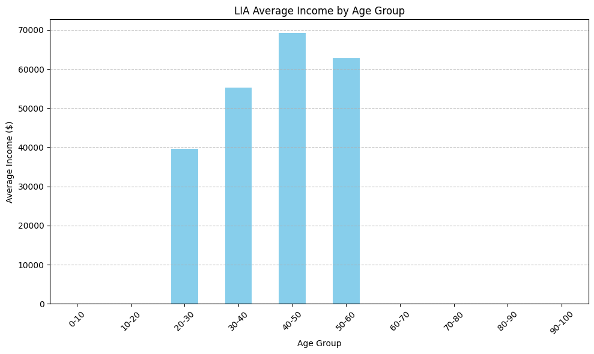
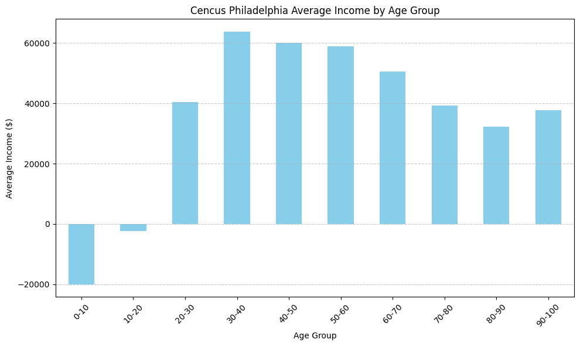

ACCY 405 William Xu, Danny Zhang, Ivy Wang, Yuning Wang
Download Data from Cencus AGE,SEX,INCOME from Philadelphia city, state pensayviana
import pandas as pdimport requestsprint("Retrieving Philadelphia Household Income (HINCP) Data")print("----------------------------------------------------")# Step 1: First identify the PUMA codes for Philadelphiaprint("Step 1: Identifying Philadelphia PUMA codes...")url_pumas ="https://api.census.gov/data/2022/acs/acs1?get=NAME&for=public%20use%20microdata%20area:*&in=state:42"response_pumas = requests.get(url_pumas)if response_pumas.status_code ==200: pumas_data = response_pumas.json() pumas_df = pd.DataFrame(pumas_data[1:], columns=pumas_data[0])# Filter for Philadelphia PUMAs philly_pumas = pumas_df[pumas_df['NAME'].str.contains('Philadelphia', case=False)]print(f"Found {len(philly_pumas)} Philadelphia PUMAs")# Extract the PUMA codes for Philadelphia philly_puma_codes = philly_pumas['public use microdata area'].tolist()print(f"Philadelphia PUMA codes: {', '.join(philly_puma_codes)}")# Step 2: Get Pennsylvania data INCLUDING HINCP and filter for Philadelphiaprint("\nStep 2: Retrieving HINCP data for Philadelphia...")# Include HINCP in the variables we're requesting# Note: we're using the 2022 acs/acs1/pums dataset which has HINCP available url_pa ="https://api.census.gov/data/2022/acs/acs1/pums?get=AGEP,SEX,PINCP,PUMA&for=state:42"print(f"Requesting URL: {url_pa}") response_pa = requests.get(url_pa)print(f"Response status code: {response_pa.status_code}")if response_pa.status_code ==200: pa_data = response_pa.json() pa_df = pd.DataFrame(pa_data[1:], columns=pa_data[0])# Filter for Philadelphia PUMAs only philly_df = pa_df[pa_df['PUMA'].isin(philly_puma_codes)]print(f"\nSuccessfully retrieved {len(philly_df)} records for Philadelphia")# Store the Philadelphia data in a variable named df df = philly_df.copy()# Convert HINCP to numeric df['PINCP'] = pd.to_numeric(df['PINCP'], errors='coerce')print(f"\nData stored in df: {df.shape} rows x {df.shape[1]} columns")print("\nFirst 5 rows:")print(df.head())print("\nHousehold Income (PINCP) Statistics:")print(f"Median: ${df['PINCP'].median():,.2f}")print(f"Mean: ${df['PINCP'].mean():,.2f}")print(f"Maximum: ${df['PINCP'].max():,.2f}")print(f"Minimum: ${df['PINCP'].min():,.2f}")print(f"Standard Deviation: ${df['PINCP'].std():,.2f}")print(f"Variance: ${df['PINCP'].var():,.2f}")# Save the dataframe to CSV (optional) df.to_csv("philadelphia_final.csv", index=False)print("\nData saved to philadelphia_hincp.csv")else:print(f"Error retrieving Pennsylvania data: {response_pa.text}")else:print(f"Error retrieving PUMA codes: {response_pumas.text}")print("\nNOTE: If you're running this in a Jupyter notebook, the dataframe is stored in the 'df' variable")print("You can access it directly by typing 'df' in another cell")
Retrieving Philadelphia Household Income (HINCP) Data
----------------------------------------------------
Step 1: Identifying Philadelphia PUMA codes...
Found 11 Philadelphia PUMAs
Philadelphia PUMA codes: 03216, 03221, 03222, 03223, 03224, 03225, 03227, 03228, 03229, 03230, 03231
Step 2: Retrieving HINCP data for Philadelphia...
Requesting URL: https://api.census.gov/data/2022/acs/acs1/pums?get=AGEP,SEX,PINCP,PUMA&for=state:42
Response status code: 200
Successfully retrieved 8129 records for Philadelphia
Data stored in df: (8129, 5) rows x 5 columns
First 5 rows:
AGEP SEX PINCP PUMA state
26 30 1 4300 03231 42
27 33 1 0 03230 42
32 33 1 10100 03227 42
33 78 1 1300 03227 42
38 33 1 0 03225 42
Household Income (PINCP) Statistics:
Median: $20,000.00
Mean: $38,253.67
Maximum: $848,000.00
Minimum: $-19,999.00
Standard Deviation: $69,249.67
Variance: $4,795,517,152.70
Data saved to philadelphia_hincp.csv
NOTE: If you're running this in a Jupyter notebook, the dataframe is stored in the 'df' variable
You can access it directly by typing 'df' in another cell
df.head()#df=df[df["PINCP"]!=60000]df.head()
AGEP
SEX
PINCP
PUMA
state
26
30
1
4300
03231
42
27
33
1
0
03230
42
32
33
1
10100
03227
42
33
78
1
1300
03227
42
38
33
1
0
03225
42
with pd.option_context('float_format', '{:.0f}'.format):print(df["PINCP"].describe())
count 8129
mean 38254
std 69250
min -19999
25% 850
50% 20000
75% 55000
max 848000
Name: PINCP, dtype: float64
/Library/Frameworks/Python.framework/Versions/3.12/lib/python3.12/site-packages/openpyxl/worksheet/header_footer.py:48: UserWarning: Cannot parse header or footer so it will be ignored
warn("""Cannot parse header or footer so it will be ignored""")
with pd.option_context('float_format', '{:.0f}'.format):print(clean_clientdata["Income"].describe())
count 1001
mean 59486
std 136389
min -204800
25% 30950
50% 43200
75% 60600
max 3725148
Name: Income, dtype: float64
# Create age bins for 10-year intervalsclean_clientdata['Age_Group'] = pd.cut(clean_clientdata['Age'], bins=[0, 10, 20, 30, 40, 50, 60, 70, 80, 90, 100], labels=['0-10', '10-20', '20-30', '30-40', '40-50', '50-60', '60-70', '70-80', '80-90', '90-100'])# Calculate mean income by age group# Calculate mean income by age groupage_income = clean_clientdata.groupby('Age_Group')['Income'].mean()# Create a bar graphimport matplotlib.pyplot as pltplt.figure(figsize=(10, 6))age_income.plot(kind='bar', color='skyblue')plt.title('LIA Average Income by Age Group')plt.xlabel('Age Group')plt.ylabel('Average Income ($)')plt.xticks(rotation=45)plt.grid(axis='y', linestyle='--', alpha=0.7)plt.tight_layout()plt.show()
/var/folders/kk/fqsqqccn52dftn_l1fb2fpc40000gn/T/ipykernel_4823/702804804.py:2: SettingWithCopyWarning:
A value is trying to be set on a copy of a slice from a DataFrame.
Try using .loc[row_indexer,col_indexer] = value instead
See the caveats in the documentation: https://pandas.pydata.org/pandas-docs/stable/user_guide/indexing.html#returning-a-view-versus-a-copy
clean_clientdata['Age_Group'] = pd.cut(clean_clientdata['Age'],
/var/folders/kk/fqsqqccn52dftn_l1fb2fpc40000gn/T/ipykernel_4823/702804804.py:9: FutureWarning: The default of observed=False is deprecated and will be changed to True in a future version of pandas. Pass observed=False to retain current behavior or observed=True to adopt the future default and silence this warning.
age_income = clean_clientdata.groupby('Age_Group')['Income'].mean()

df["AGEP"]=df["AGEP"].astype(int)
df["Age_Group"]=pd.cut(df["AGEP"], bins=[0, 10, 20, 30, 40, 50, 60, 70, 80, 90, 100], labels=['0-10', '10-20', '20-30', '30-40', '40-50', '50-60', '60-70', '70-80', '80-90', '90-100'])df.groupby("Age_Group")["PINCP"].mean()age_income = df.groupby('Age_Group')['PINCP'].mean()# Create a bar graphimport matplotlib.pyplot as pltplt.figure(figsize=(10, 6))age_income.plot(kind='bar', color='skyblue')plt.title('Cencus Philadelphia Average Income by Age Group')plt.xlabel('Age Group')plt.ylabel('Average Income ($)')plt.xticks(rotation=45)plt.grid(axis='y', linestyle='--', alpha=0.7)plt.tight_layout()plt.show()
/var/folders/kk/fqsqqccn52dftn_l1fb2fpc40000gn/T/ipykernel_4823/734262794.py:6: FutureWarning: The default of observed=False is deprecated and will be changed to True in a future version of pandas. Pass observed=False to retain current behavior or observed=True to adopt the future default and silence this warning.
df.groupby("Age_Group")["PINCP"].mean()
/var/folders/kk/fqsqqccn52dftn_l1fb2fpc40000gn/T/ipykernel_4823/734262794.py:7: FutureWarning: The default of observed=False is deprecated and will be changed to True in a future version of pandas. Pass observed=False to retain current behavior or observed=True to adopt the future default and silence this warning.
age_income = df.groupby('Age_Group')['PINCP'].mean()

df = df.rename(columns={'PINCP': 'Income','AGEP':'Age','SEX':'Gender'})df.drop(columns=["PUMA",'state','state'],inplace=True)# Replace rows with 0 income with their age group average income# First, calculate the average income by age groupage_group_avg = df.groupby('Age_Group')['Income'].mean()# Create a mask for rows with 0 incomezero_income_mask = df['Income'] ==0# For each row with 0 income, replace with the average for that age groupfor idx in df[zero_income_mask].index: age_group = df.loc[idx, 'Age_Group'] df.loc[idx, 'Income'] = age_group_avg[age_group]df.head()
/var/folders/kk/fqsqqccn52dftn_l1fb2fpc40000gn/T/ipykernel_4823/762701757.py:6: FutureWarning: The default of observed=False is deprecated and will be changed to True in a future version of pandas. Pass observed=False to retain current behavior or observed=True to adopt the future default and silence this warning.
age_group_avg = df.groupby('Age_Group')['Income'].mean()
/var/folders/kk/fqsqqccn52dftn_l1fb2fpc40000gn/T/ipykernel_4823/762701757.py:14: FutureWarning: Setting an item of incompatible dtype is deprecated and will raise an error in a future version of pandas. Value '63780.43096568236' has dtype incompatible with int64, please explicitly cast to a compatible dtype first.
df.loc[idx, 'Income'] = age_group_avg[age_group]
/var/folders/kk/fqsqqccn52dftn_l1fb2fpc40000gn/T/ipykernel_4823/3541311556.py:1: FutureWarning: Downcasting behavior in `replace` is deprecated and will be removed in a future version. To retain the old behavior, explicitly call `result.infer_objects(copy=False)`. To opt-in to the future behavior, set `pd.set_option('future.no_silent_downcasting', True)`
clean_clientdata['Gender']=clean_clientdata['Gender'].replace({'M':1,'F':2})
/var/folders/kk/fqsqqccn52dftn_l1fb2fpc40000gn/T/ipykernel_4823/3541311556.py:1: SettingWithCopyWarning:
A value is trying to be set on a copy of a slice from a DataFrame.
Try using .loc[row_indexer,col_indexer] = value instead
See the caveats in the documentation: https://pandas.pydata.org/pandas-docs/stable/user_guide/indexing.html#returning-a-view-versus-a-copy
clean_clientdata['Gender']=clean_clientdata['Gender'].replace({'M':1,'F':2})
Age 5548
Gender 5548
Income 5548
Age_Group 5548
dtype: int64
train=dftest=clean_clientdatax_train=train[["Age","Gender"]]y_train=train["Income"]x_test=test[["Age","Gender"]]y_test=test["Income"]x_train.astype(int)x_test.astype(int)y_train.astype(int)y_test.astype(int)x_train["Gender"].astype(int)x_test["Gender"].astype(int)y_train.astype(int)y_test.astype(int)# Convert Gender column from object to intx_train["Gender"] = x_train["Gender"].astype(int)x_train.dtypes
/var/folders/kk/fqsqqccn52dftn_l1fb2fpc40000gn/T/ipykernel_4823/1672658285.py:16: SettingWithCopyWarning:
A value is trying to be set on a copy of a slice from a DataFrame.
Try using .loc[row_indexer,col_indexer] = value instead
See the caveats in the documentation: https://pandas.pydata.org/pandas-docs/stable/user_guide/indexing.html#returning-a-view-versus-a-copy
x_train["Gender"] = x_train["Gender"].astype(int)
import matplotlib.pyplot as pltimport pandas as pd# Create a DataFrame for visualizationresults_df = pd.DataFrame({'Actual': y_test,'Predicted': y_pred})# Sort by actual values for better visualizationresults_df = results_df.sort_values('Actual')# Reset index for plottingresults_df = results_df.reset_index(drop=True)# Create the plotplt.figure(figsize=(12, 6))plt.plot(results_df.index, results_df['Actual'], label='Actual Income', color='blue')plt.plot(results_df.index, results_df['Predicted'], label='Predicted Income', color='red', alpha=0.7)plt.title('Actual vs Predicted Income')plt.xlabel('Index (sorted by actual income)')plt.ylabel('Income')plt.legend()plt.grid(True, alpha=0.3)# Add a scatter plot to show the relationshipplt.figure(figsize=(10, 8))plt.scatter(results_df['Actual'], results_df['Predicted'], alpha=0.5)plt.plot([results_df['Actual'].min(), results_df['Actual'].max()], [results_df['Actual'].min(), results_df['Actual'].max()], 'k--', lw=2)plt.title('Actual vs Predicted Income Scatter Plot')plt.xlabel('Actual Income')plt.ylabel('Predicted Income')plt.grid(True, alpha=0.3)plt.tight_layout()plt.show()
/var/folders/kk/fqsqqccn52dftn_l1fb2fpc40000gn/T/ipykernel_4823/1760484834.py:1: SettingWithCopyWarning:
A value is trying to be set on a copy of a slice from a DataFrame.
Try using .loc[row_indexer,col_indexer] = value instead
See the caveats in the documentation: https://pandas.pydata.org/pandas-docs/stable/user_guide/indexing.html#returning-a-view-versus-a-copy
test["predicted"]=y_pred
Gender
Age
Income
Age_Group
predicted
0
2
29
38000.0
20-30
51243.886304
1
1
29
52175.0
20-30
56599.273440
2
2
25
43800.0
20-30
48690.416890
3
1
57
43800.0
50-60
101307.612849
4
1
46
23500.0
40-50
57664.412528
# Calculate the risk based on the difference between actual income and predicted income# Risk is defined as the percentage difference between actual and predicted valuestest['differecne_percentage'] =abs(((test['Income'] - test['predicted']) / test['predicted']) *100)# Display the first few rows with the new risk columnprint("Risk represents the percentage difference between actual and predicted income:")print("Positive values: Actual income is higher than predicted")print("Negative values: Actual income is lower than predicted")test.head()
Risk represents the percentage difference between actual and predicted income:
Positive values: Actual income is higher than predicted
Negative values: Actual income is lower than predicted
/var/folders/kk/fqsqqccn52dftn_l1fb2fpc40000gn/T/ipykernel_4823/2514360848.py:3: SettingWithCopyWarning:
A value is trying to be set on a copy of a slice from a DataFrame.
Try using .loc[row_indexer,col_indexer] = value instead
See the caveats in the documentation: https://pandas.pydata.org/pandas-docs/stable/user_guide/indexing.html#returning-a-view-versus-a-copy
test['differecne_percentage'] = abs(((test['Income'] - test['predicted']) / test['predicted']) * 100)
Gender
Age
Income
Age_Group
predicted
risk
differecne_percentage
0
2
29
38000.0
20-30
51243.886304
-25.844812
25.844812
1
1
29
52175.0
20-30
56599.273440
-7.816838
7.816838
2
2
25
43800.0
20-30
48690.416890
-10.043900
10.043900
3
1
57
43800.0
50-60
101307.612849
-56.765342
56.765342
4
1
46
23500.0
40-50
57664.412528
-59.246962
59.246962
test.differecne_percentage.describe()
count 1001.000000
mean 60.373728
std 205.342145
min 0.049842
25% 23.089886
50% 42.567197
75% 59.903294
max 5318.164048
Name: differecne_percentage, dtype: float64
# Create a new 'audit' column based on the difference percentage# If the difference percentage is greater than 60, mark as 'Yes' for audit, otherwise 'No'test['audit'] = test['differecne_percentage'].apply(lambda x: 'Yes'if x >60else'No')# Display the first few rows with the new audit columnprint("\nAudit column added based on difference percentage > 60%:")test.head()test.audit.value_counts()
Audit column added based on difference percentage > 60%:
/var/folders/kk/fqsqqccn52dftn_l1fb2fpc40000gn/T/ipykernel_4823/739996348.py:3: SettingWithCopyWarning:
A value is trying to be set on a copy of a slice from a DataFrame.
Try using .loc[row_indexer,col_indexer] = value instead
See the caveats in the documentation: https://pandas.pydata.org/pandas-docs/stable/user_guide/indexing.html#returning-a-view-versus-a-copy
test['audit'] = test['differecne_percentage'].apply(lambda x: 'Yes' if x > 60 else 'No')